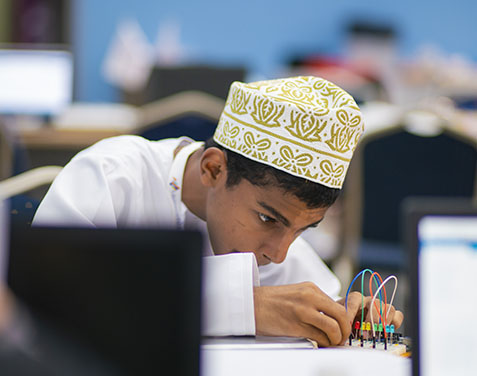

22 July, 2019
With the blessing of His Majesty Sultan Qaboos Bin Said, the Diwan of the Royal Court announces that a new national initiative will be launched soon targeting young people through the launching of the National Youth Development Program. The procedures and conditions of the application process will be announced later.
The program comes within the context of the Royal Approach of His Majesty the Sultan, which focuses on the development of human resources and the continuation of the series of national programs sponsored by the Diwan of the Royal Court, which began with the National Program for the preparation of executive heads of the private sector and the national program of leadership and competitiveness of the government sector.
Sayyed Khalid bin Hilal al- Busaidi, Minister of the Diwan of the Royal Court said: "The objective of the National Youth Skills Development Program is to develop a youthful Omani community that is capable of entering areas of work consistent with current and future economic needs and enhancing the youth base of competencies to be responsible for various fields".
He added "The design of the program will be based on the international Ask model, which focuses on three themes: attitude, values and ethics of, which will focus on promoting national identity, including work ethic and the ability to communicate with different cultures. The second theme is technical skills, which provides skills related to different fields of work. Finally, the Knowledge Hub, which will focus on the basic contents of leadership skills, the foundations of self-learning and the development of innovation and employment in various fields of work".
The overall framework of the program has been developed in fruitful cooperation with the leading international institutions in this type of specialized rehabilitation, ensuring that content is provided
With the blessing of His Majesty Sultan Qaboos Bin Said, the Diwan of the Royal Court announces that a new national initiative will be launched soon targeting young people through the launching of the National Youth Development Program. The procedures and conditions of the application process will be announced later.
The program comes within the context of the Royal Approach of His Majesty the Sultan, which focuses on the development of human resources and the continuation of the series of national programs

With the blessing of His Majesty Sultan Qaboos Bin Said, the Diwan of the Royal Court announces that a new national initiative will be launched soon targeting young people through the launching of the National Youth Development Program. The procedures and conditions of the application process will be announced later.
The program comes within the context of the Royal Approach of His Majesty the Sultan, which focuses on the development of human resources and the continuation of the series of national programs sponsored by the Diwan of the Royal Court, which began with the National Program for the preparation of executive heads of the private sector and the national program of leadership and competitiveness of the government sector.
Sayyed Khalid bin Hilal al- Busaidi, Minister of the Diwan of the Royal Court said: "The objective of the National Youth Skills Development Program is to develop a youthful Omani community that is capable of entering areas of work consistent with current and future economic needs and enhancing the youth base of competencies to be responsible for various fields".
The overall framework of the program has been developed in fruitful cooperation with the leading international institutions in this type of specialized rehabilitation, ensuring that content is provided combining the academic base with the scientific experiments.